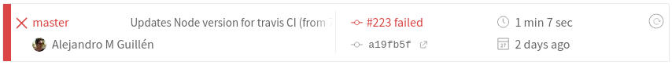
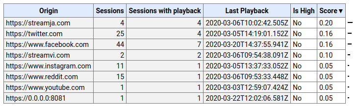
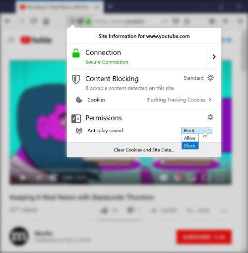

Tests automatiques avec autoplay
Depuis 2017, les différents navigateurs implémentent des fonctionnalités permettant de bloquer le son qui démarre automatiquement. Ceci n’a rien d’étonnant : on a tous vécu la nuisance des vidéos en autoplay qui se cachent parmi les nombreux onglets du navigateur. Néanmoins, pour les développeurs qui se basent de façon légitime sur l’autoplay (notamment pour des jeux vidéos ou applications multimédia), ces restrictions peuvent causer des difficultés.
Les tests chez Pizzicato JS
J’ai rencontré un de ces problèmes dans le cadre du développement de Pizzicato JS, une librairie visant à simplifier la création et manipulation du son dans le navigateur (code source ouvert). Pizzicato compte une batterie de tests automatiques interagissant avec l’API WebAudio. Ces tests sont exécutés en Chrome depuis Travis CI à chaque nouveau commit.
Avec les versions récentes de Chrome, les tests qui dépendent du son échouent systématiquement :

Chrome 80.0.3987 (Linux 0.0.0) Sound actions should trigger 'end' when buffer ended FAILED
Expected spy endCallback to have been called.
at tests/Sound.test.js:270:26
Chrome 80.0.3987 (Linux 0.0.0): Executed 118 of 144 (1 FAILED) (0 secs / 2.516 secs)
Chrome 80.0.3987 (Linux 0.0.0) Sound actions should offset upon playing when specified FAILED
Expected spy endCallback to have been called.
at tests/Sound.test.js:287:26
Chrome 80.0.3987 (Linux 0.0.0): Executed 119 of 144 (2 FAILED) (0 secs / 4.527 secs)La politique Autoplay de Chrome
Cet échec n’est pas un mystère : les tests vont à l’encontre de la politique autoplay de Chrome : pas d’audio sans interaction utilisateur. Or, dans un contexte ou les tests automatiques se déroulent dans un processus virtuel au sein de Travis CI, l’interaction utilisateur est impossible.
Heureusement, on peut lancer Chrome avec une option spéciale pour lui demander de désactiver cette politique :
Chrome --autoplay-policy=no-user-gesture-required'Pour intégrer ceci dans Pizzicato, il suffit de modifier le fichier de configuration de Karma. Au moment de définir les customLaunchers nous pouvons aussi profiter pour passer des arguments additionnels.
customLaunchers: {
Chrome_travis_ci: {
base: 'Chrome',
flags: [
'--no-sandbox',
'--autoplay-policy=no-user-gesture-required'
]
}
},TravisCI est vert à nouveau.
Et dans la vraie vie ?
Comprendre les conditions qui mènent les navigateurs à bloquer le contenu audio est utile pour que nos utilisateurs puissent profiter du web sans devoir bidouiller des options obscures dans la ligne de commande.
Chrome
Dans Chrome, l’autoplay en muet (volume 0) est permis - d’où les boutons “Tap to unmute” qui apparaissent un peu partout. Sinon, il faut impérativement un de ces scénarios :
- l’utilisateur a interagit avec la page (par ex. en clickant quelque part),
- l’utilisateur a ajouté le site dans son écran d’accueil ou l’a installé en tant que Progressive Web App, ou
- le site a un Media Engagement Index (MEI) suffisant.
Ce dernier point peut paraître un peu obscur. Le MEI tente de mesurer à quel point l’usager est habitué à consommer de l’audio/vidéo sur un site particulier. Pour ce faire, Chrome fait le calcul du ratio des visites totales contre les visites incluant une consommation média considéré comme suffisante (çad plus de sept secondes, audio non-muet, onglet actif et taille d’écran supérieure à 200x140).
Pour les utilisateurs de Chrome, ces stats sont visibles sur chrome://media-engagement.

Firefox
Les règles de Firefox sont similaires à celles de Chrome : l’audio en muet est permis et l’interaction utilisateur est requise pour tout ce qui est audible.
De plus, Firefox permet l’autoplay si l’utilisateur a déjà donné la permission au site d’accéder à la camera ou le micro. Ceci s’avère utile pour les sites de vidéo-conférence.
En ce qui concerne les sites “de confiance” Firefox opte pour une approche plus direct. Lorsqu’un site avec autoplay est bloqué, une icône apparaît dans la barre URL. L’usager peut clicker dessus et manuellement indiquer que le site peut faire de l’autoplay sans que le navigateur s’en mêle.
 Image de Mozilla
Ce n’est pas fini
Les règles autour de l’audio et vidéo sur les navigateurs vont encore évoluer de façon importante dans les années qui viennent. Des discussions autour de l’étendue des restrictions autoplay se déroulent encore. D’un côté, démarrer des vidéos automatiquement, même sans audio, consomme des données des forfaits potentiellement limités. D’un autre, plein des applications multimédia dépendent de cette fonctionnalité. En tant que développeurs, il faudra suivre de près cette évolution.
En savoir plus
Malheureusement, la plupart de la documentation autour des politiques autoplay des navigateurs est exclusivement en anglais. Voici quelques exemples :
- Détails sur la politique autoplay Chrome
- Article de Chris Pearce concernant l’autoplay sur Firefox
- Article de Kevin Decker sur l’autoplay sur Safari
- Documentation de la politique autoplay sur Edge